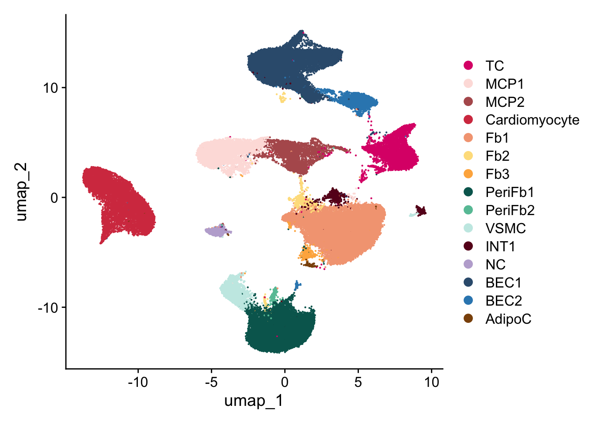
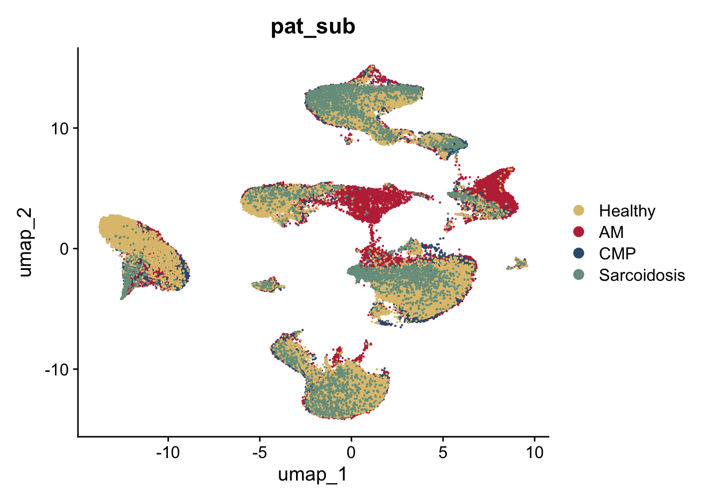

Relative Abundances
2024-09-20
Last updated: 2024-11-13
Checks: 5 2
Knit directory: Myocarditis
snRNAseq/analysis/
This reproducible R Markdown analysis was created with workflowr (version 1.7.1). The Checks tab describes the reproducibility checks that were applied when the results were created. The Past versions tab lists the development history.
The R Markdown is untracked by Git. To know which version of the R
Markdown file created these results, you’ll want to first commit it to
the Git repo. If you’re still working on the analysis, you can ignore
this warning. When you’re finished, you can run
wflow_publish to commit the R Markdown file and build the
HTML.
Great job! The global environment was empty. Objects defined in the global environment can affect the analysis in your R Markdown file in unknown ways. For reproduciblity it’s best to always run the code in an empty environment.
The command set.seed(12345) was run prior to running the
code in the R Markdown file. Setting a seed ensures that any results
that rely on randomness, e.g. subsampling or permutations, are
reproducible.
Great job! Recording the operating system, R version, and package versions is critical for reproducibility.
Nice! There were no cached chunks for this analysis, so you can be confident that you successfully produced the results during this run.
Using absolute paths to the files within your workflowr project makes it difficult for you and others to run your code on a different machine. Change the absolute path(s) below to the suggested relative path(s) to make your code more reproducible.
| absolute | relative |
|---|---|
| /Users/immbio/Desktop/Emily/Myocarditis snRNAseq/docs/Markers_dat_all_clusters_frequency_relative abundance_V2 | ../docs/Markers_dat_all_clusters_frequency_relative abundance_V2 |
| ~/Desktop/Emily/Myocarditis snRNAseq/data/01 Merged Seurat files/Myocarditis_RDS_04.10.2024.rds | ../data/01 Merged Seurat files/Myocarditis_RDS_04.10.2024.rds |
Great! You are using Git for version control. Tracking code development and connecting the code version to the results is critical for reproducibility.
The results in this page were generated with repository version d254b0c. See the Past versions tab to see a history of the changes made to the R Markdown and HTML files.
Note that you need to be careful to ensure that all relevant files for
the analysis have been committed to Git prior to generating the results
(you can use wflow_publish or
wflow_git_commit). workflowr only checks the R Markdown
file, but you know if there are other scripts or data files that it
depends on. Below is the status of the Git repository when the results
were generated:
Ignored files:
Ignored: .DS_Store
Ignored: .Rhistory
Ignored: .Rproj.user/
Ignored: analysis/.DS_Store
Ignored: analysis/.Rhistory
Ignored: data/01 Merged Seurat files/
Ignored: data/AM/
Ignored: data/Berlin/
Ignored: data/CM/
Ignored: data/Healthy/
Ignored: data/Sarcoidosis/
Untracked files:
Untracked: analysis/DE genes by patientV3.Rmd
Untracked: analysis/Fibroblast subset V2 reclustering.Rmd
Untracked: analysis/Immune_cells.Rmd
Untracked: analysis/Myocarditis_snRNAseq_QC_merging_V3.Rmd
Untracked: analysis/Relative-AbundancesV2.Rmd
Untracked: analysis/Relative_AbundancesV2.Rmd
Untracked: analysis/SingleCellBrowserSeurat3_plotly.R
Untracked: analysis/Stratification_sex.Rmd
Unstaged changes:
Modified: analysis/DE Genes by Disease Condition.Rmd
Deleted: analysis/Myocarditis snRNAseq QC and merging_V2.Rmd
Deleted: analysis/Myocarditis snRNAseq.Rmd
Deleted: analysis/Relative AbundancesV2.Rmd
Modified: analysis/Stratification AM by sex.Rmd
Modified: analysis/Stratification by T cell condition and DE genes.Rmd
Deleted: analysis/license.Rmd
Deleted: data/README.md
Note that any generated files, e.g. HTML, png, CSS, etc., are not included in this status report because it is ok for generated content to have uncommitted changes.
There are no past versions. Publish this analysis with
wflow_publish() to start tracking its development.
``` r
##load merged file
seuratM <- readRDS("~/Desktop/Emily/Myocarditis snRNAseq/data/01 Merged Seurat files/Myocarditis_RDS_04.10.2024.rds")
table(seuratM$dataset)
312581_05-5_20230308_Hu_nucseq_SG36_EMB_GEM 312581_06-6_20230308_Hu_nucseq_SG37_EMB_GEM
4323 1123
353921_28-28_20240529_Hu_nucseq_Immpath_EMB18 353921_29-29_20240529_Hu_nucseq_Immpath_EMB24
208 105
353921_30-30_20240529_Hu_nucseq_Immpath_EMB25 353921_31-31_20240529_Hu_nucseq_Immpath_EMB27
227 579
353921_32-32_20240529_Hu_nucseq_Immpath_EMB29 353921_33-33_20240529_Hu_nucseq_Immpath_EMB30
335 730
353921_34-34_20240529_Hu_nucseq_Immpath_EMB35 353921_35-35_20240529_Hu_nucseq_Immpath_EMB37
1217 604
359861_09-11_20240723_Hu_nucseq_Ber_Pat5_EM979_1 359861_10-13_20240723_Hu_nucseq_Ber_Pat5_EM979_2
771 1476
359861_11-1_20240730_Hu_nucseq_Ber_Pat1_EMB1537 359861_12-2_20240730_Hu_nucseq_Ber_Pat2_EMB1041
316 608
359861_16-8_20240730_Hu_nucseq_Immpath_EMB47 359861_17-9_20240730_Hu_nucseq_Immpath_EMB48
513 426
o27533_1_12-12_20220203_Hu_nucseq_EMB31_GEM o27936_1_7-7_20220309_Hu_nucseq_EMB32_GEM
236 1192
o28576_1_01-1_20220525_Hu_nucseq_Graz_1_EMB_GEM o28576_1_02-2_20220525_Hu_nucseq_Graz_2_EMB_GEM
2740 1684
o28576_1_03-3_20220525_Hu_nucseq_Graz_3_EMB_GEM o28576_1_04-4_20220525_Hu_nucseq_Graz_4_EMB_GEM
2396 545
o28576_1_05-5_20220525_Hu_nucseq_Graz_5_EMB_GEM o28576_1_06-6_20220525_Hu_nucseq_Graz_6_EMB_GEM
781 491
o28576_1_07-7_20220525_Hu_nucseq_Graz_7_EMB_GEM o28576_1_08-8_20220525_Hu_nucseq_Graz_8_HH_GEM
653 3921
o28576_1_12-12_20220525_Hu_nucseq_Graz_12_HH_GEM o28576_1_13-13_20220525_Hu_nucseq_EMB32_GEM
3818 1428
o292731_1-1_20220818_Hu_nucseq_Graz_9_HH_GEM o292731_2-2_20220818_Hu_nucseq_Graz_13_HH_GEM
4908 9882
o292731_3-3_20220818_Hu_nucseq_SG_33_EMB_GEM o292731_4-4_20220818_Hu_nucseq_SG_34_EMB_GEM
6286 620
o292731_5-5_20220818_Hu_nucseq_SG_35_EMB_GEM o294781_01-1_20220912_Hu_nucseq_Graz_21_HH_GEM
2363 1442
o294781_02-2_20220912_Hu_nucseq_Graz_22_HH_GEM o294781_03-3_20220912_Hu_nucseq_Graz_23_HH_GEM
1998 841
o294781_04-4_20220912_Hu_nucseq_Graz_24_HH_GEM o294781_05-5_20220912_Hu_nucseq_Graz_14_EMB_GEM
1480 1268
o294781_06-6_20220912_Hu_nucseq_Graz_15_EMB_GEM o294781_09-9_20220912_Hu_nucseq_Graz_18_EMB_GEM
4439 2280
o294781_10-10_20220912_Hu_nucseq_Graz_19_EMB_GEM o294781_11-11_20220912_Hu_nucseq_Graz_20_EMB_GEM
111 2706 table(seuratM$RNA_snn_res.0.25)
0 1 2 3 4 5 6 7 8 9 10 11 12 13 14
17699 13639 12754 8222 5475 4836 3723 2365 2156 905 882 694 380 249 91 table(seuratM$orig.ident)
74070 seuratM$clusterName <- "clusterName"
Idents(seuratM) <- seuratM$clusterName
seuratM$clusterName[which(seuratM$RNA_snn_res.0.25 %in% "0" )] <- "Fb1"
seuratM$clusterName[which(seuratM$RNA_snn_res.0.25 %in% "1" )] <- "BEC1"
seuratM$clusterName[which(seuratM$RNA_snn_res.0.25 %in% "2" )] <- "PeriFb1"
seuratM$clusterName[which(seuratM$RNA_snn_res.0.25 %in% "3" )] <- "Cardiomyocyte"
seuratM$clusterName[which(seuratM$RNA_snn_res.0.25 %in% "4" )] <- "MCP1"
seuratM$clusterName[which(seuratM$RNA_snn_res.0.25 %in% "5" )] <- "TC"
seuratM$clusterName[which(seuratM$RNA_snn_res.0.25 %in% "6" )] <- "MCP2"
seuratM$clusterName[which(seuratM$RNA_snn_res.0.25 %in% "7" )] <- "BEC2"
seuratM$clusterName[which(seuratM$RNA_snn_res.0.25 %in% "8" )] <- "VSMC"
seuratM$clusterName[which(seuratM$RNA_snn_res.0.25 %in% "9" )] <- "NC"
seuratM$clusterName[which(seuratM$RNA_snn_res.0.25 %in% "10" )] <- "INT1"
seuratM$clusterName[which(seuratM$RNA_snn_res.0.25 %in% "11" )] <- "Fb2"
seuratM$clusterName[which(seuratM$RNA_snn_res.0.25 %in% "12" )] <- "Fb3"
seuratM$clusterName[which(seuratM$RNA_snn_res.0.25 %in% "13" )] <- "PeriFb2"
seuratM$clusterName[which(seuratM$RNA_snn_res.0.25 %in% "14" )] <- "AdipoC"
seuratM$clusterName <- factor(seuratM$clusterName, levels =c("TC", "MCP1","MCP2","Cardiomyocyte","Fb1","Fb2","Fb3", "PeriFb1", "PeriFb2","VSMC", "INT1","NC", "BEC1","BEC2", "AdipoC"))
##set color vectors
colclusterName <- c("#dd1c77", "#fde0dd", "#B45B5C", "#D53E4F", "#f4a582", "#FEE08B", "#feb24c", "#01665e","#66C2A5", "#c7eae5", "#67001f", "#BEAED4", "#355C7D","#3288BD","#8c510a")
names(colclusterName) <- c("TC", "MCP1","MCP2","Cardiomyocyte","Fb1","Fb2","Fb3", "PeriFb1", "PeriFb2","VSMC", "INT1","NC", "BEC1","BEC2", "AdipoC")
colpat_sub<- c("#dfc27d","#BE3144","#355C7D", "#779d8d")
coldiseaseCond <- colpat_sub
names(coldiseaseCond) <- c("Healthy", "AM", "CMP", "Sarcoidosis")
order_coldiseaseCond <- c("Healthy", "AM", "CMP", "Sarcoidosis")
head(seuratM@meta.data) orig.ident nCount_RNA nFeature_RNA
312581_05-5_20230308_Hu_nucseq_SG36_EMB_GEM.AAACCCATCCTCCACA-1 1421 864
312581_05-5_20230308_Hu_nucseq_SG36_EMB_GEM.AAACGAACAAACCATC-1 3358 1859
312581_05-5_20230308_Hu_nucseq_SG36_EMB_GEM.AAACGAAGTCCGGTCA-1 2212 1256
312581_05-5_20230308_Hu_nucseq_SG36_EMB_GEM.AAACGAAGTCTCAGAT-1 2877 1598
312581_05-5_20230308_Hu_nucseq_SG36_EMB_GEM.AAACGAATCAGCTGTA-1 663 477
312581_05-5_20230308_Hu_nucseq_SG36_EMB_GEM.AAACGCTAGGAGCTGT-1 1941 1153
Sample
312581_05-5_20230308_Hu_nucseq_SG36_EMB_GEM.AAACCCATCCTCCACA-1 /data/mapped/o31258_NovaSeq_230328_NOV1685/312581_05-5_20230308_Hu_nucseq_SG36_EMB_GEM/outs/filtered_feature_bc_matrix
312581_05-5_20230308_Hu_nucseq_SG36_EMB_GEM.AAACGAACAAACCATC-1 /data/mapped/o31258_NovaSeq_230328_NOV1685/312581_05-5_20230308_Hu_nucseq_SG36_EMB_GEM/outs/filtered_feature_bc_matrix
312581_05-5_20230308_Hu_nucseq_SG36_EMB_GEM.AAACGAAGTCCGGTCA-1 /data/mapped/o31258_NovaSeq_230328_NOV1685/312581_05-5_20230308_Hu_nucseq_SG36_EMB_GEM/outs/filtered_feature_bc_matrix
312581_05-5_20230308_Hu_nucseq_SG36_EMB_GEM.AAACGAAGTCTCAGAT-1 /data/mapped/o31258_NovaSeq_230328_NOV1685/312581_05-5_20230308_Hu_nucseq_SG36_EMB_GEM/outs/filtered_feature_bc_matrix
312581_05-5_20230308_Hu_nucseq_SG36_EMB_GEM.AAACGAATCAGCTGTA-1 /data/mapped/o31258_NovaSeq_230328_NOV1685/312581_05-5_20230308_Hu_nucseq_SG36_EMB_GEM/outs/filtered_feature_bc_matrix
312581_05-5_20230308_Hu_nucseq_SG36_EMB_GEM.AAACGCTAGGAGCTGT-1 /data/mapped/o31258_NovaSeq_230328_NOV1685/312581_05-5_20230308_Hu_nucseq_SG36_EMB_GEM/outs/filtered_feature_bc_matrix
Barcode
312581_05-5_20230308_Hu_nucseq_SG36_EMB_GEM.AAACCCATCCTCCACA-1 AAACCCATCCTCCACA-1
312581_05-5_20230308_Hu_nucseq_SG36_EMB_GEM.AAACGAACAAACCATC-1 AAACGAACAAACCATC-1
312581_05-5_20230308_Hu_nucseq_SG36_EMB_GEM.AAACGAAGTCCGGTCA-1 AAACGAAGTCCGGTCA-1
312581_05-5_20230308_Hu_nucseq_SG36_EMB_GEM.AAACGAAGTCTCAGAT-1 AAACGAAGTCTCAGAT-1
312581_05-5_20230308_Hu_nucseq_SG36_EMB_GEM.AAACGAATCAGCTGTA-1 AAACGAATCAGCTGTA-1
312581_05-5_20230308_Hu_nucseq_SG36_EMB_GEM.AAACGCTAGGAGCTGT-1 AAACGCTAGGAGCTGT-1
dataset
312581_05-5_20230308_Hu_nucseq_SG36_EMB_GEM.AAACCCATCCTCCACA-1 312581_05-5_20230308_Hu_nucseq_SG36_EMB_GEM
312581_05-5_20230308_Hu_nucseq_SG36_EMB_GEM.AAACGAACAAACCATC-1 312581_05-5_20230308_Hu_nucseq_SG36_EMB_GEM
312581_05-5_20230308_Hu_nucseq_SG36_EMB_GEM.AAACGAAGTCCGGTCA-1 312581_05-5_20230308_Hu_nucseq_SG36_EMB_GEM
312581_05-5_20230308_Hu_nucseq_SG36_EMB_GEM.AAACGAAGTCTCAGAT-1 312581_05-5_20230308_Hu_nucseq_SG36_EMB_GEM
312581_05-5_20230308_Hu_nucseq_SG36_EMB_GEM.AAACGAATCAGCTGTA-1 312581_05-5_20230308_Hu_nucseq_SG36_EMB_GEM
312581_05-5_20230308_Hu_nucseq_SG36_EMB_GEM.AAACGCTAGGAGCTGT-1 312581_05-5_20230308_Hu_nucseq_SG36_EMB_GEM
sum detected subsets_Mt_sum
312581_05-5_20230308_Hu_nucseq_SG36_EMB_GEM.AAACCCATCCTCCACA-1 1424 866 0
312581_05-5_20230308_Hu_nucseq_SG36_EMB_GEM.AAACGAACAAACCATC-1 3361 1862 6
312581_05-5_20230308_Hu_nucseq_SG36_EMB_GEM.AAACGAAGTCCGGTCA-1 2213 1257 5
312581_05-5_20230308_Hu_nucseq_SG36_EMB_GEM.AAACGAAGTCTCAGAT-1 2882 1603 0
312581_05-5_20230308_Hu_nucseq_SG36_EMB_GEM.AAACGAATCAGCTGTA-1 663 477 2
312581_05-5_20230308_Hu_nucseq_SG36_EMB_GEM.AAACGCTAGGAGCTGT-1 1942 1154 2
subsets_Mt_detected
312581_05-5_20230308_Hu_nucseq_SG36_EMB_GEM.AAACCCATCCTCCACA-1 0
312581_05-5_20230308_Hu_nucseq_SG36_EMB_GEM.AAACGAACAAACCATC-1 5
312581_05-5_20230308_Hu_nucseq_SG36_EMB_GEM.AAACGAAGTCCGGTCA-1 3
312581_05-5_20230308_Hu_nucseq_SG36_EMB_GEM.AAACGAAGTCTCAGAT-1 0
312581_05-5_20230308_Hu_nucseq_SG36_EMB_GEM.AAACGAATCAGCTGTA-1 2
312581_05-5_20230308_Hu_nucseq_SG36_EMB_GEM.AAACGCTAGGAGCTGT-1 1
subsets_Mt_percent total sizeFactor
312581_05-5_20230308_Hu_nucseq_SG36_EMB_GEM.AAACCCATCCTCCACA-1 0.0000000 1424 0.8412483
312581_05-5_20230308_Hu_nucseq_SG36_EMB_GEM.AAACGAACAAACCATC-1 0.1785183 3361 1.9855587
312581_05-5_20230308_Hu_nucseq_SG36_EMB_GEM.AAACGAAGTCCGGTCA-1 0.2259376 2213 1.3073613
312581_05-5_20230308_Hu_nucseq_SG36_EMB_GEM.AAACGAAGTCTCAGAT-1 0.0000000 2882 1.7025826
312581_05-5_20230308_Hu_nucseq_SG36_EMB_GEM.AAACGAATCAGCTGTA-1 0.3016591 663 0.3916767
312581_05-5_20230308_Hu_nucseq_SG36_EMB_GEM.AAACGCTAGGAGCTGT-1 0.1029866 1942 1.1472642
total_counts_drop
312581_05-5_20230308_Hu_nucseq_SG36_EMB_GEM.AAACCCATCCTCCACA-1 FALSE
312581_05-5_20230308_Hu_nucseq_SG36_EMB_GEM.AAACGAACAAACCATC-1 FALSE
312581_05-5_20230308_Hu_nucseq_SG36_EMB_GEM.AAACGAAGTCCGGTCA-1 FALSE
312581_05-5_20230308_Hu_nucseq_SG36_EMB_GEM.AAACGAAGTCTCAGAT-1 FALSE
312581_05-5_20230308_Hu_nucseq_SG36_EMB_GEM.AAACGAATCAGCTGTA-1 FALSE
312581_05-5_20230308_Hu_nucseq_SG36_EMB_GEM.AAACGCTAGGAGCTGT-1 FALSE
total_features_drop mito_drop
312581_05-5_20230308_Hu_nucseq_SG36_EMB_GEM.AAACCCATCCTCCACA-1 FALSE FALSE
312581_05-5_20230308_Hu_nucseq_SG36_EMB_GEM.AAACGAACAAACCATC-1 FALSE FALSE
312581_05-5_20230308_Hu_nucseq_SG36_EMB_GEM.AAACGAAGTCCGGTCA-1 FALSE FALSE
312581_05-5_20230308_Hu_nucseq_SG36_EMB_GEM.AAACGAAGTCTCAGAT-1 FALSE FALSE
312581_05-5_20230308_Hu_nucseq_SG36_EMB_GEM.AAACGAATCAGCTGTA-1 FALSE FALSE
312581_05-5_20230308_Hu_nucseq_SG36_EMB_GEM.AAACGCTAGGAGCTGT-1 FALSE FALSE
RNA_snn_res.0.25 seurat_clusters
312581_05-5_20230308_Hu_nucseq_SG36_EMB_GEM.AAACCCATCCTCCACA-1 2 1
312581_05-5_20230308_Hu_nucseq_SG36_EMB_GEM.AAACGAACAAACCATC-1 0 0
312581_05-5_20230308_Hu_nucseq_SG36_EMB_GEM.AAACGAAGTCCGGTCA-1 8 7
312581_05-5_20230308_Hu_nucseq_SG36_EMB_GEM.AAACGAAGTCTCAGAT-1 0 0
312581_05-5_20230308_Hu_nucseq_SG36_EMB_GEM.AAACGAATCAGCTGTA-1 2 1
312581_05-5_20230308_Hu_nucseq_SG36_EMB_GEM.AAACGCTAGGAGCTGT-1 0 0
RNA_snn_res.0.6 RNA_snn_res.0.8
312581_05-5_20230308_Hu_nucseq_SG36_EMB_GEM.AAACCCATCCTCCACA-1 1 0
312581_05-5_20230308_Hu_nucseq_SG36_EMB_GEM.AAACGAACAAACCATC-1 0 1
312581_05-5_20230308_Hu_nucseq_SG36_EMB_GEM.AAACGAAGTCCGGTCA-1 11 9
312581_05-5_20230308_Hu_nucseq_SG36_EMB_GEM.AAACGAAGTCTCAGAT-1 0 1
312581_05-5_20230308_Hu_nucseq_SG36_EMB_GEM.AAACGAATCAGCTGTA-1 1 0
312581_05-5_20230308_Hu_nucseq_SG36_EMB_GEM.AAACGCTAGGAGCTGT-1 0 1
RNA_snn_res.0.4 patient pat_sub
312581_05-5_20230308_Hu_nucseq_SG36_EMB_GEM.AAACCCATCCTCCACA-1 1 AM 02 AM
312581_05-5_20230308_Hu_nucseq_SG36_EMB_GEM.AAACGAACAAACCATC-1 0 AM 02 AM
312581_05-5_20230308_Hu_nucseq_SG36_EMB_GEM.AAACGAAGTCCGGTCA-1 7 AM 02 AM
312581_05-5_20230308_Hu_nucseq_SG36_EMB_GEM.AAACGAAGTCTCAGAT-1 0 AM 02 AM
312581_05-5_20230308_Hu_nucseq_SG36_EMB_GEM.AAACGAATCAGCTGTA-1 1 AM 02 AM
312581_05-5_20230308_Hu_nucseq_SG36_EMB_GEM.AAACGCTAGGAGCTGT-1 0 AM 02 AM
percent.mt patient_pat_sub
312581_05-5_20230308_Hu_nucseq_SG36_EMB_GEM.AAACCCATCCTCCACA-1 0 AM 02_AM
312581_05-5_20230308_Hu_nucseq_SG36_EMB_GEM.AAACGAACAAACCATC-1 0 AM 02_AM
312581_05-5_20230308_Hu_nucseq_SG36_EMB_GEM.AAACGAAGTCCGGTCA-1 0 AM 02_AM
312581_05-5_20230308_Hu_nucseq_SG36_EMB_GEM.AAACGAAGTCTCAGAT-1 0 AM 02_AM
312581_05-5_20230308_Hu_nucseq_SG36_EMB_GEM.AAACGAATCAGCTGTA-1 0 AM 02_AM
312581_05-5_20230308_Hu_nucseq_SG36_EMB_GEM.AAACGCTAGGAGCTGT-1 0 AM 02_AM
clusterName
312581_05-5_20230308_Hu_nucseq_SG36_EMB_GEM.AAACCCATCCTCCACA-1 PeriFb1
312581_05-5_20230308_Hu_nucseq_SG36_EMB_GEM.AAACGAACAAACCATC-1 Fb1
312581_05-5_20230308_Hu_nucseq_SG36_EMB_GEM.AAACGAAGTCCGGTCA-1 VSMC
312581_05-5_20230308_Hu_nucseq_SG36_EMB_GEM.AAACGAAGTCTCAGAT-1 Fb1
312581_05-5_20230308_Hu_nucseq_SG36_EMB_GEM.AAACGAATCAGCTGTA-1 PeriFb1
312581_05-5_20230308_Hu_nucseq_SG36_EMB_GEM.AAACGCTAGGAGCTGT-1 Fb1Idents(seuratM) <- seuratM$clusterName
DimPlot(seuratM, reduction = "umap", pt.size = 0.1, cols = colclusterName)
### Order of Conditions
Idents(seuratM) <- seuratM$pat_sub
DimPlot(seuratM, reduction = "umap", pt.size = 0.1, group.by = "pat_sub", cols = coldiseaseCond)
datList <- NULL
for(con in unique(seuratM$pat_sub)){
seuratSub <- subset(seuratM, pat_sub==con)
print(dim(seuratSub))
dat_con <- as.data.frame(table(seuratSub$clusterName)) %>%
mutate(percent=Freq/ncol(seuratSub)) %>% mutate(diseaseCond=con)
datList[[con]] <- dat_con
}[1] 39114 29076
[1] 39114 11635
[1] 39114 28290
[1] 39114 5069dat_all <- do.call("rbind", datList)
order_patsub <- c("Healthy", "AM", "CMP", "Sarcoidosis")
ggbarplot(dat_all, x = "diseaseCond", y = "percent", fill = "Var1", palette = colclusterName, legend = "right", legend.titel = "cluster", xlab = "condition", ylab = "frequency") +
theme(axis.text.x = element_text(angle = 90, vjust = 0.5, hjust=1)) +
scale_x_discrete(limits = order_patsub)
datList <- NULL
for(con in unique(seuratM$patient)){
seuratSub <- subset(seuratM, patient==con)
print(dim(seuratSub))
dat_con <- as.data.frame(table(seuratSub$clusterName)) %>%
mutate(percent=Freq/ncol(seuratSub)) %>% mutate(patient=con)
datList[[con]] <- dat_con
}[1] 39114 4323
[1] 39114 1123
[1] 39114 208
[1] 39114 579
[1] 39114 335
[1] 39114 1217
[1] 39114 604
[1] 39114 513
[1] 39114 426
[1] 39114 236
[1] 39114 1192
[1] 39114 2740
[1] 39114 1684
[1] 39114 6286
[1] 39114 4439
[1] 39114 2247
[1] 39114 316
[1] 39114 608
[1] 39114 105
[1] 39114 227
[1] 39114 730
[1] 39114 2396
[1] 39114 545
[1] 39114 781
[1] 39114 491
[1] 39114 653
[1] 39114 1428
[1] 39114 620
[1] 39114 1268
[1] 39114 2280
[1] 39114 111
[1] 39114 3921
[1] 39114 3818
[1] 39114 4908
[1] 39114 9882
[1] 39114 1442
[1] 39114 1998
[1] 39114 841
[1] 39114 1480
[1] 39114 2363
[1] 39114 2706dat_all <- do.call("rbind", datList)
# Order
patient_order <- c("Healthy 01", "Healthy 02", "Healthy 03", "Healthy 04", "Healthy 05",
"Healthy 06", "Healthy 07", "Healthy 08", "Healthy 09", "Healthy 10",
"AM 01", "AM 02", "AM 03", "AM 04", "AM 05", "AM 06", "AM 07",
"AM 08", "AM 09", "AM 10", "AM 11", "AM 12", "AM 13", "AM 14",
"AM 15", "AM 16", "AM 17", "AM 18", "CMP 01", "CMP 02", "CMP 03",
"CMP 04", "CMP 05", "CMP 06", "CMP 07", "CMP 08", "CMP 09",
"CMP 10", "CMP 11", "CMP 12", "CMP 13", "Sarcoidosis 01", "Sarcoidosis 02")
#View(dat_all)
#write.table(dat_all, file= "/Users/immbio/Desktop/Emily/Myocarditis snRNAseq/docs/Markers_dat_all_clusters_frequency_relative abundance_V2", sep = "\t",quote=F,row.names=T,col.names=T)
dat_all$patient <- factor(dat_all$patient, levels = patient_order)
## plot abundance
ggbarplot(dat_all, x= "patient", y= "percent", fill = "Var1", legend = "right", legend.titel = "cluster", ylab = "frequency", palette = colclusterName ) + theme(axis.text.x = element_text(angle = 90, vjust = 0.5, hjust=1))
## Change order
# Subset TC cluster
dat_tc <- dat_all[dat_all$Var1 == "TC", ]
# T cells in descending order
dat_all$patient <- factor(dat_all$patient, levels = dat_tc$patient[order(-dat_tc$percent)])
ggbarplot(dat_all, x= "patient", y= "percent", fill = "Var1", legend = "right", legend.titel = "cluster", ylab = "frequency", palette = colclusterName ) + theme(axis.text.x = element_text(angle = 90, vjust = 0.5, hjust=1))
## Inflammatory Macrophages MCP2 in descending order
dat_mcp2 <- dat_all[dat_all$Var1 == "MCP2", ]
dat_all$patient <- factor(dat_all$patient, levels = dat_mcp2$patient[order(-dat_mcp2$percent)])
ggbarplot(dat_all, x= "patient", y= "percent", fill = "Var1", legend = "right", legend.titel = "cluster", ylab = "frequency", palette = colclusterName ) + theme(axis.text.x = element_text(angle = 90, vjust = 0.5, hjust=1))
## Create Heatmap
Idents(seuratM) <- seuratM$clusterName
seuratM$clusterName <- factor(seuratM$clusterName, levels =c("Cardiomyocyte","Fb1","Fb2","Fb3", "INT1", "PeriFb1", "PeriFb2", "VSMC","NC", "BEC1","BEC2", "AdipoC", "MCP1","MCP2","TC"))
genes <- data.frame(gene=rownames(seuratM)) %>%
mutate(geneID=gsub("^.*\\.", "", gene))
selGenes <- data.frame(geneID=rev(c("TTN", "MYBPC3", "RYR2", "NEBL", "TNNT2", "CMYA5", "COL6A3", "DCN", "FBN1", "C7", "PDGFRA", "CDH19", "PDGFRB", "BMP4", "GREM1", "ITGA7","RGS5", "NOTCH3", "MYH11", "ACTA2","PECAM1", "VWF", "EGFL7", "POSTN", "ITGA10", "CDH11","CCL21", "FLT4", "NRXN1", "ANK3", "PTPRZ1", "PLIN1", "GPAM", "CD163", "LYVE1", "MRC1", "SIGLEC1", "STAB1", "CSF1R","MERTK", "HLA-DQB1","CCR2", "CD79B","JCHAIN", "IL7R", "CD3E", "PTPRC", "CD2"))) %>% left_join(., genes, by="geneID") %>% filter(gene != "ENSG00000232995.RGS5")
avgHeatmap <- function(seuratM, selGenes, colVecIdent, colVecCond=NULL,
ordVec=NULL, gapVecR=NULL, gapVecC=NULL,cc=FALSE,
cr=FALSE, condCol=FALSE){
selGenes <- selGenes$gene
## assay data
clusterAssigned <- as.data.frame(Idents(seuratM)) %>%
dplyr::mutate(cell=rownames(.))
colnames(clusterAssigned)[1] <- "ident"
seuratDat <- GetAssayData(seuratM)
## genes of interest
genes <- data.frame(gene=rownames(seuratM)) %>%
mutate(geneID=gsub("^.*\\.", "", gene)) %>% filter(geneID %in% selGenes)
## matrix with averaged cnts per ident
logNormExpres <- as.data.frame(t(as.matrix(
seuratDat[which(rownames(seuratDat) %in% genes$gene),])))
logNormExpres <- logNormExpres %>% dplyr::mutate(cell=rownames(.)) %>%
dplyr::left_join(.,clusterAssigned, by=c("cell")) %>%
dplyr::select(-cell) %>% dplyr::group_by(ident) %>%
dplyr::summarise_all(mean)
logNormExpresMa <- logNormExpres %>% dplyr::select(-ident) %>% as.matrix()
rownames(logNormExpresMa) <- logNormExpres$ident
logNormExpresMa <- t(logNormExpresMa)
rownames(logNormExpresMa) <- gsub("^.*?\\.","",rownames(logNormExpresMa))
## remove genes if they are all the same in all groups
ind <- apply(logNormExpresMa, 1, sd) == 0
logNormExpresMa <- logNormExpresMa[!ind,]
genes <- genes[!ind,]
## color columns according to cluster
annotation_col <- as.data.frame(gsub("(^.*?_)","",
colnames(logNormExpresMa)))%>%
dplyr::mutate(celltype=gsub("(_.*$)","",colnames(logNormExpresMa)))
colnames(annotation_col)[1] <- "col1"
annotation_col <- annotation_col %>%
dplyr::mutate(cond = gsub("(^[0-9]_?)","",col1)) %>%
dplyr::select(cond, celltype)
rownames(annotation_col) <- colnames(logNormExpresMa)
ann_colors = list(
celltype=colVec)
if(is.null(ann_colors$cond)){
annotation_col$cond <- NULL
}
## adjust order
logNormExpresMa <- logNormExpresMa[selGenes,]
if(is.null(ordVec)){
ordVec <- levels(seuratM)
ordVec <- c(c("Cardiomyocyte","Fb1","Fb2","Fb3", "INT1", "PeriFb1", "PeriFb2", "VSMC","NC", "BEC1","BEC2", "AdipoC", "MCP1","MCP2","TC"))
}
logNormExpresMa <- logNormExpresMa[,ordVec]
## scaled row-wise
pheatmap(logNormExpresMa, scale="row" ,treeheight_row = 0,cluster_rows = cr,
cluster_cols = cc, color = colorRampPalette(c("#2166AC", "#F7F7F7", "#B2182B"))(50),
annotation_col = annotation_col, cellwidth=15, cellheight=10,
annotation_colors = ann_colors, gaps_row = gapVecR, gaps_col = gapVecC)
}
genesPlot <- data.frame(gene=c("TTN", "MYBPC3", "RYR2", "NEBL", "TNNT2", "CMYA5", "COL6A3", "DCN", "FBN1", "C7", "PDGFRA", "CDH19", "PDGFRB", "BMP4", "GREM1", "ITGA7","RGS5", "NOTCH3", "MYH11", "ACTA2","PECAM1", "VWF", "EGFL7", "POSTN", "ITGA10", "CDH11","CCL21", "FLT4", "NRXN1", "ANK3", "PTPRZ1", "PLIN1", "GPAM", "CD163", "LYVE1", "MRC1", "SIGLEC1", "STAB1", "CSF1R","MERTK", "HLA-DQB1", "CCR2", "CD79B","JCHAIN", "IL7R","CD3E", "PTPRC", "CD2"))
levels(seuratM) [1] "TC" "MCP1" "MCP2" "Cardiomyocyte" "Fb1" "Fb2"
[7] "Fb3" "PeriFb1" "PeriFb2" "VSMC" "INT1" "NC"
[13] "BEC1" "BEC2" "AdipoC" colVec <- colclusterName
# colVec <- c(colPal, colPal, colPal)
# colVec <- c("blue", "red")
avgHeatmap(seuratM, selGenes = genesPlot, colVecIdent = colVec)
date()[1] "Wed Nov 13 23:29:04 2024"sessionInfo()R version 4.4.1 (2024-06-14)
Platform: aarch64-apple-darwin20
Running under: macOS Sonoma 14.3
Matrix products: default
BLAS: /Library/Frameworks/R.framework/Versions/4.4-arm64/Resources/lib/libRblas.0.dylib
LAPACK: /Library/Frameworks/R.framework/Versions/4.4-arm64/Resources/lib/libRlapack.dylib; LAPACK version 3.12.0
locale:
[1] en_US.UTF-8/en_US.UTF-8/en_US.UTF-8/C/en_US.UTF-8/en_US.UTF-8
time zone: Europe/Zurich
tzcode source: internal
attached base packages:
[1] grid stats4 stats graphics grDevices utils datasets methods base
other attached packages:
[1] workflowr_1.7.1 pathview_1.44.0 wordcloud_2.6
[4] textshaping_0.4.0 EnhancedVolcano_1.22.0 ggrepel_0.9.6
[7] RColorBrewer_1.1-3 NCmisc_1.2.0 VennDiagram_1.7.3
[10] futile.logger_1.4.3 ggupset_0.4.0 gridExtra_2.3
[13] DOSE_3.30.5 enrichplot_1.24.4 msigdbr_7.5.1
[16] org.Hs.eg.db_3.19.1 AnnotationDbi_1.66.0 clusterProfiler_4.12.6
[19] multtest_2.60.0 metap_1.11 scater_1.32.1
[22] scuttle_1.14.0 destiny_3.18.0 circlize_0.4.16
[25] muscat_1.18.0 viridis_0.6.5 viridisLite_0.4.2
[28] lubridate_1.9.3 forcats_1.0.0 stringr_1.5.1
[31] purrr_1.0.2 readr_2.1.5 tidyr_1.3.1
[34] tibble_3.2.1 tidyverse_2.0.0 dplyr_1.1.4
[37] SingleCellExperiment_1.26.0 SummarizedExperiment_1.34.0 Biobase_2.64.0
[40] GenomicRanges_1.56.1 GenomeInfoDb_1.40.1 IRanges_2.38.1
[43] S4Vectors_0.42.1 BiocGenerics_0.50.0 MatrixGenerics_1.16.0
[46] matrixStats_1.4.1 pheatmap_1.0.12 ggpubr_0.6.0
[49] ggplot2_3.5.1 Seurat_5.1.0 SeuratObject_5.0.2
[52] sp_2.1-4 runSeurat3_0.1.0 ExploreSCdataSeurat3_0.1.0
loaded via a namespace (and not attached):
[1] graph_1.82.0 igraph_2.0.3 ica_1.0-3
[4] plotly_4.10.4 Formula_1.2-5 zlibbioc_1.50.0
[7] tidyselect_1.2.1 bit_4.5.0 doParallel_1.0.17
[10] clue_0.3-65 lattice_0.22-6 rjson_0.2.23
[13] blob_1.2.4 S4Arrays_1.4.1 pbkrtest_0.5.3
[16] parallel_4.4.1 png_0.1-8 plotrix_3.8-4
[19] cli_3.6.3 ggplotify_0.1.2 goftest_1.2-3
[22] VIM_6.2.2 variancePartition_1.34.0 BiocNeighbors_1.22.0
[25] shadowtext_0.1.4 uwot_0.2.2 curl_5.2.3
[28] tidytree_0.4.6 mime_0.12 evaluate_1.0.1
[31] leiden_0.4.3.1 ComplexHeatmap_2.20.0 stringi_1.8.4
[34] backports_1.5.0 XML_3.99-0.17 lmerTest_3.1-3
[37] qqconf_1.3.2 httpuv_1.6.15 magrittr_2.0.3
[40] rappdirs_0.3.3 splines_4.4.1 ggraph_2.2.1
[43] sctransform_0.4.1 ggbeeswarm_0.7.2 DBI_1.2.3
[46] jquerylib_0.1.4 smoother_1.3 withr_3.0.1
[49] git2r_0.33.0 corpcor_1.6.10 systemfonts_1.1.0
[52] reformulas_0.3.0 class_7.3-22 rprojroot_2.0.4
[55] lmtest_0.9-40 tidygraph_1.3.1 formatR_1.14
[58] colourpicker_1.3.0 htmlwidgets_1.6.4 fs_1.6.4
[61] labeling_0.4.3 fANCOVA_0.6-1 SparseArray_1.4.8
[64] DESeq2_1.44.0 ranger_0.16.0 DEoptimR_1.1-3
[67] reticulate_1.39.0 hexbin_1.28.4 zoo_1.8-12
[70] XVector_0.44.0 knitr_1.48 ggplot.multistats_1.0.1
[73] UCSC.utils_1.0.0 RhpcBLASctl_0.23-42 timechange_0.3.0
[76] foreach_1.5.2 fansi_1.0.6 patchwork_1.3.0
[79] caTools_1.18.3 ggtree_3.12.0 data.table_1.16.0
[82] R.oo_1.26.0 RSpectra_0.16-2 irlba_2.3.5.1
[85] gridGraphics_0.5-1 fastDummies_1.7.4 lazyeval_0.2.2
[88] yaml_2.3.10 survival_3.7-0 scattermore_1.2
[91] crayon_1.5.3 RcppAnnoy_0.0.22 Rgraphviz_2.48.0
[94] progressr_0.14.0 tweenr_2.0.3 later_1.3.2
[97] ggridges_0.5.6 codetools_0.2-20 GlobalOptions_0.1.2
[100] aod_1.3.3 KEGGREST_1.44.1 Rtsne_0.17
[103] shape_1.4.6.1 limma_3.60.6 pkgconfig_2.0.3
[106] KEGGgraph_1.64.0 TMB_1.9.15 spatstat.univar_3.0-1
[109] mathjaxr_1.6-0 getPass_0.2-4 EnvStats_3.0.0
[112] aplot_0.2.3 scatterplot3d_0.3-44 ape_5.8
[115] spatstat.sparse_3.1-0 xtable_1.8-4 car_3.1-3
[118] highr_0.11 plyr_1.8.9 httr_1.4.7
[121] rbibutils_2.3 tools_4.4.1 globals_0.16.3
[124] beeswarm_0.4.0 broom_1.0.7 nlme_3.1-166
[127] lambda.r_1.2.4 lme4_1.1-35.5 digest_0.6.37
[130] numDeriv_2016.8-1.1 Matrix_1.7-0 farver_2.1.2
[133] tzdb_0.4.0 remaCor_0.0.18 reshape2_1.4.4
[136] yulab.utils_0.1.7 glue_1.8.0 cachem_1.1.0
[139] polyclip_1.10-7 generics_0.1.3 Biostrings_2.72.1
[142] mvtnorm_1.3-1 parallelly_1.38.0 mnormt_2.1.1
[145] statmod_1.5.0 RcppHNSW_0.6.0 ScaledMatrix_1.12.0
[148] carData_3.0-5 minqa_1.2.8 pbapply_1.7-2
[151] httr2_1.0.5 spam_2.11-0 gson_0.1.0
[154] utf8_1.2.4 graphlayouts_1.2.0 gtools_3.9.5
[157] ggsignif_0.6.4 RcppEigen_0.3.4.0.2 shiny_1.9.1
[160] GenomeInfoDbData_1.2.12 glmmTMB_1.1.10 R.utils_2.12.3
[163] RCurl_1.98-1.16 memoise_2.0.1 rmarkdown_2.28
[166] scales_1.3.0 R.methodsS3_1.8.2 future_1.34.0
[169] RANN_2.6.2 Cairo_1.6-2 spatstat.data_3.1-2
[172] rstudioapi_0.16.0 whisker_0.4.1 cluster_2.1.6
[175] mutoss_0.1-13 spatstat.utils_3.1-0 hms_1.1.3
[178] fitdistrplus_1.2-1 munsell_0.5.1 cowplot_1.1.3
[181] colorspace_2.1-1 rlang_1.1.4 DelayedMatrixStats_1.26.0
[184] sparseMatrixStats_1.16.0 xts_0.14.0 dotCall64_1.2
[187] shinydashboard_0.7.2 ggforce_0.4.2 laeken_0.5.3
[190] mgcv_1.9-1 xfun_0.48 e1071_1.7-16
[193] TH.data_1.1-2 iterators_1.0.14 abind_1.4-8
[196] GOSemSim_2.30.2 treeio_1.28.0 ps_1.8.0
[199] futile.options_1.0.1 bitops_1.0-9 Rdpack_2.6.1
[202] promises_1.3.0 scatterpie_0.2.4 RSQLite_2.3.7
[205] qvalue_2.36.0 sandwich_3.1-1 fgsea_1.30.0
[208] DelayedArray_0.30.1 proxy_0.4-27 GO.db_3.19.1
[211] compiler_4.4.1 prettyunits_1.2.0 boot_1.3-31
[214] beachmat_2.20.0 listenv_0.9.1 Rcpp_1.0.13
[217] edgeR_4.2.1 BiocSingular_1.20.0 tensor_1.5
[220] MASS_7.3-61 progress_1.2.3 BiocParallel_1.38.0
[223] babelgene_22.9 spatstat.random_3.3-2 R6_2.5.1
[226] fastmap_1.2.0 multcomp_1.4-26 fastmatch_1.1-4
[229] rstatix_0.7.2 vipor_0.4.7 TTR_0.24.4
[232] ROCR_1.0-11 TFisher_0.2.0 rsvd_1.0.5
[235] vcd_1.4-13 nnet_7.3-19 gtable_0.3.5
[238] KernSmooth_2.23-24 miniUI_0.1.1.1 deldir_2.0-4
[241] htmltools_0.5.8.1 ggthemes_5.1.0 bit64_4.5.2
[244] spatstat.explore_3.3-2 lifecycle_1.0.4 blme_1.0-6
[247] processx_3.8.4 callr_3.7.6 nloptr_2.1.1
[250] sass_0.4.9 vctrs_0.6.5 robustbase_0.99-4-1
[253] spatstat.geom_3.3-3 sn_2.1.1 ggfun_0.1.6
[256] future.apply_1.11.2 bslib_0.8.0 pillar_1.9.0
[259] gplots_3.2.0 pcaMethods_1.96.0 locfit_1.5-9.10
[262] jsonlite_1.8.9 GetoptLong_1.0.5 `
sessionInfo()R version 4.4.1 (2024-06-14)
Platform: aarch64-apple-darwin20
Running under: macOS Sonoma 14.3
Matrix products: default
BLAS: /Library/Frameworks/R.framework/Versions/4.4-arm64/Resources/lib/libRblas.0.dylib
LAPACK: /Library/Frameworks/R.framework/Versions/4.4-arm64/Resources/lib/libRlapack.dylib; LAPACK version 3.12.0
locale:
[1] en_US.UTF-8/en_US.UTF-8/en_US.UTF-8/C/en_US.UTF-8/en_US.UTF-8
time zone: Europe/Zurich
tzcode source: internal
attached base packages:
[1] grid stats4 stats graphics grDevices utils datasets methods base
other attached packages:
[1] workflowr_1.7.1 pathview_1.44.0 wordcloud_2.6
[4] textshaping_0.4.0 EnhancedVolcano_1.22.0 ggrepel_0.9.6
[7] RColorBrewer_1.1-3 NCmisc_1.2.0 VennDiagram_1.7.3
[10] futile.logger_1.4.3 ggupset_0.4.0 gridExtra_2.3
[13] DOSE_3.30.5 enrichplot_1.24.4 msigdbr_7.5.1
[16] org.Hs.eg.db_3.19.1 AnnotationDbi_1.66.0 clusterProfiler_4.12.6
[19] multtest_2.60.0 metap_1.11 scater_1.32.1
[22] scuttle_1.14.0 destiny_3.18.0 circlize_0.4.16
[25] muscat_1.18.0 viridis_0.6.5 viridisLite_0.4.2
[28] lubridate_1.9.3 forcats_1.0.0 stringr_1.5.1
[31] purrr_1.0.2 readr_2.1.5 tidyr_1.3.1
[34] tibble_3.2.1 tidyverse_2.0.0 dplyr_1.1.4
[37] SingleCellExperiment_1.26.0 SummarizedExperiment_1.34.0 Biobase_2.64.0
[40] GenomicRanges_1.56.1 GenomeInfoDb_1.40.1 IRanges_2.38.1
[43] S4Vectors_0.42.1 BiocGenerics_0.50.0 MatrixGenerics_1.16.0
[46] matrixStats_1.4.1 pheatmap_1.0.12 ggpubr_0.6.0
[49] ggplot2_3.5.1 Seurat_5.1.0 SeuratObject_5.0.2
[52] sp_2.1-4 runSeurat3_0.1.0 ExploreSCdataSeurat3_0.1.0
loaded via a namespace (and not attached):
[1] graph_1.82.0 igraph_2.0.3 ica_1.0-3
[4] plotly_4.10.4 Formula_1.2-5 zlibbioc_1.50.0
[7] tidyselect_1.2.1 bit_4.5.0 doParallel_1.0.17
[10] clue_0.3-65 lattice_0.22-6 rjson_0.2.23
[13] blob_1.2.4 S4Arrays_1.4.1 pbkrtest_0.5.3
[16] parallel_4.4.1 png_0.1-8 plotrix_3.8-4
[19] cli_3.6.3 ggplotify_0.1.2 goftest_1.2-3
[22] VIM_6.2.2 variancePartition_1.34.0 BiocNeighbors_1.22.0
[25] shadowtext_0.1.4 uwot_0.2.2 curl_5.2.3
[28] tidytree_0.4.6 mime_0.12 evaluate_1.0.1
[31] leiden_0.4.3.1 ComplexHeatmap_2.20.0 stringi_1.8.4
[34] backports_1.5.0 XML_3.99-0.17 lmerTest_3.1-3
[37] qqconf_1.3.2 httpuv_1.6.15 magrittr_2.0.3
[40] rappdirs_0.3.3 splines_4.4.1 ggraph_2.2.1
[43] sctransform_0.4.1 ggbeeswarm_0.7.2 DBI_1.2.3
[46] jquerylib_0.1.4 smoother_1.3 withr_3.0.1
[49] git2r_0.33.0 corpcor_1.6.10 systemfonts_1.1.0
[52] reformulas_0.3.0 class_7.3-22 rprojroot_2.0.4
[55] lmtest_0.9-40 tidygraph_1.3.1 formatR_1.14
[58] colourpicker_1.3.0 htmlwidgets_1.6.4 fs_1.6.4
[61] labeling_0.4.3 fANCOVA_0.6-1 SparseArray_1.4.8
[64] DESeq2_1.44.0 ranger_0.16.0 DEoptimR_1.1-3
[67] reticulate_1.39.0 hexbin_1.28.4 zoo_1.8-12
[70] XVector_0.44.0 knitr_1.48 ggplot.multistats_1.0.1
[73] UCSC.utils_1.0.0 RhpcBLASctl_0.23-42 timechange_0.3.0
[76] foreach_1.5.2 fansi_1.0.6 patchwork_1.3.0
[79] caTools_1.18.3 ggtree_3.12.0 data.table_1.16.0
[82] R.oo_1.26.0 RSpectra_0.16-2 irlba_2.3.5.1
[85] gridGraphics_0.5-1 fastDummies_1.7.4 lazyeval_0.2.2
[88] yaml_2.3.10 survival_3.7-0 scattermore_1.2
[91] crayon_1.5.3 RcppAnnoy_0.0.22 Rgraphviz_2.48.0
[94] progressr_0.14.0 tweenr_2.0.3 later_1.3.2
[97] ggridges_0.5.6 codetools_0.2-20 GlobalOptions_0.1.2
[100] aod_1.3.3 KEGGREST_1.44.1 Rtsne_0.17
[103] shape_1.4.6.1 limma_3.60.6 pkgconfig_2.0.3
[106] KEGGgraph_1.64.0 TMB_1.9.15 spatstat.univar_3.0-1
[109] mathjaxr_1.6-0 getPass_0.2-4 EnvStats_3.0.0
[112] aplot_0.2.3 scatterplot3d_0.3-44 ape_5.8
[115] spatstat.sparse_3.1-0 xtable_1.8-4 car_3.1-3
[118] highr_0.11 plyr_1.8.9 httr_1.4.7
[121] rbibutils_2.3 tools_4.4.1 globals_0.16.3
[124] beeswarm_0.4.0 broom_1.0.7 nlme_3.1-166
[127] lambda.r_1.2.4 lme4_1.1-35.5 digest_0.6.37
[130] numDeriv_2016.8-1.1 Matrix_1.7-0 farver_2.1.2
[133] tzdb_0.4.0 remaCor_0.0.18 reshape2_1.4.4
[136] yulab.utils_0.1.7 glue_1.8.0 cachem_1.1.0
[139] polyclip_1.10-7 generics_0.1.3 Biostrings_2.72.1
[142] mvtnorm_1.3-1 parallelly_1.38.0 mnormt_2.1.1
[145] statmod_1.5.0 RcppHNSW_0.6.0 ScaledMatrix_1.12.0
[148] carData_3.0-5 minqa_1.2.8 pbapply_1.7-2
[151] httr2_1.0.5 spam_2.11-0 gson_0.1.0
[154] utf8_1.2.4 graphlayouts_1.2.0 gtools_3.9.5
[157] ggsignif_0.6.4 RcppEigen_0.3.4.0.2 shiny_1.9.1
[160] GenomeInfoDbData_1.2.12 glmmTMB_1.1.10 R.utils_2.12.3
[163] RCurl_1.98-1.16 memoise_2.0.1 rmarkdown_2.28
[166] scales_1.3.0 R.methodsS3_1.8.2 future_1.34.0
[169] RANN_2.6.2 Cairo_1.6-2 spatstat.data_3.1-2
[172] rstudioapi_0.16.0 whisker_0.4.1 cluster_2.1.6
[175] mutoss_0.1-13 spatstat.utils_3.1-0 hms_1.1.3
[178] fitdistrplus_1.2-1 munsell_0.5.1 cowplot_1.1.3
[181] colorspace_2.1-1 rlang_1.1.4 DelayedMatrixStats_1.26.0
[184] sparseMatrixStats_1.16.0 xts_0.14.0 dotCall64_1.2
[187] shinydashboard_0.7.2 ggforce_0.4.2 laeken_0.5.3
[190] mgcv_1.9-1 xfun_0.48 e1071_1.7-16
[193] TH.data_1.1-2 iterators_1.0.14 abind_1.4-8
[196] GOSemSim_2.30.2 treeio_1.28.0 ps_1.8.0
[199] futile.options_1.0.1 bitops_1.0-9 Rdpack_2.6.1
[202] promises_1.3.0 scatterpie_0.2.4 RSQLite_2.3.7
[205] qvalue_2.36.0 sandwich_3.1-1 fgsea_1.30.0
[208] DelayedArray_0.30.1 proxy_0.4-27 GO.db_3.19.1
[211] compiler_4.4.1 prettyunits_1.2.0 boot_1.3-31
[214] beachmat_2.20.0 listenv_0.9.1 Rcpp_1.0.13
[217] edgeR_4.2.1 BiocSingular_1.20.0 tensor_1.5
[220] MASS_7.3-61 progress_1.2.3 BiocParallel_1.38.0
[223] babelgene_22.9 spatstat.random_3.3-2 R6_2.5.1
[226] fastmap_1.2.0 multcomp_1.4-26 fastmatch_1.1-4
[229] rstatix_0.7.2 vipor_0.4.7 TTR_0.24.4
[232] ROCR_1.0-11 TFisher_0.2.0 rsvd_1.0.5
[235] vcd_1.4-13 nnet_7.3-19 gtable_0.3.5
[238] KernSmooth_2.23-24 miniUI_0.1.1.1 deldir_2.0-4
[241] htmltools_0.5.8.1 ggthemes_5.1.0 bit64_4.5.2
[244] spatstat.explore_3.3-2 lifecycle_1.0.4 blme_1.0-6
[247] processx_3.8.4 callr_3.7.6 nloptr_2.1.1
[250] sass_0.4.9 vctrs_0.6.5 robustbase_0.99-4-1
[253] spatstat.geom_3.3-3 sn_2.1.1 ggfun_0.1.6
[256] future.apply_1.11.2 bslib_0.8.0 pillar_1.9.0
[259] gplots_3.2.0 pcaMethods_1.96.0 locfit_1.5-9.10
[262] jsonlite_1.8.9 GetoptLong_1.0.5